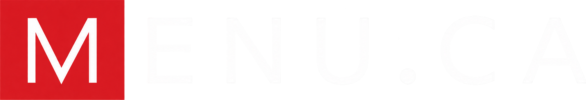

The menuconnect identity
Brand guidelines.
One brand, in every detail. The logos, colours, type and words that make menuconnect feel like menuconnect.
You’re viewing the light-mode guidelines.You’re viewing the dark-mode guidelines.
Overview
This is the brand for menuconnect by Menu.ca: every email, page, sales and client piece we make. The owner welcome email (“<Restaurant>, your dashboard is ready”) stays the reference for emails: match it, never change it.
Light mode. White and light grey, ink text, one red. Every example and colour on this page is shown in light mode.
Dark mode. Navy, white text, teal for the accent; the brand’s red stays on the mark. Every example and colour on this page is shown in dark mode. Emails show it only in mail apps that honour prefers-color-scheme: dark; Gmail keeps the light layout.
Logos
The brand logo is for anything about the ordering platform itself: the M mark beside the “menuconnect” wordmark over “by Menu.ca”, in four versions. D is the primary; A, B and C are alternates. Chosen by Brian on 2026-09-25; Jordan’s idea: “menuconnect by menu.ca”.
D. Stacked, “connect” in red Primary, Brian’s pick
Use: by default for anything about the platform: owner dashboard, sales pages, rollout pages, case studies.
Download: for light backgrounds (PNG) · for dark backgrounds (PNG)


E. Stacked, with the old MENU.CA logo as the byline Trial, for your review

Use: a trial of D where “by Menu.ca” is the real MENU.CA logo from the old system, so owners who know the old logo see the link at a glance.
Download: for light backgrounds (PNG) · for dark backgrounds (PNG)


A. All on one line Alternate
Use: where height is tight, such as a single-line header bar. “by Menu.ca” sits on the same line at 20/24, aligned to the wordmark’s baseline.
Download: for light backgrounds (PNG) · for dark backgrounds (PNG)


B. Stacked, lowercase Alternate
Use: only when a design needs the plainer form with no red in the wordmark.
Download: for light backgrounds (PNG) · for dark backgrounds (PNG)


C. Stacked, two words Alternate
Use: only when a design needs the two-word “Menu Connect” form.
Download: for light backgrounds (PNG) · for dark backgrounds (PNG)


Build. The M mark at 48 x 48 (mark-size), never tinted or boxed; 12px gap to the words. The wordmark in wordmark style (34/38 bold) in ink; for D, “menu” in ink and “connect” in #fe4745. Stacked versions (B, C, D): “by Menu.ca” below at 16/20 regular in muted. The dot in #fe4745 in every version.
In light. The wordmark is ink #1a1d23, “by Menu.ca” is muted #6b7280; “connect”, the dot and the M mark are #fe4745.
In dark. The wordmark (ink) turns white #ffffff; “by Menu.ca” (muted) turns #9fb0c3. “connect”, the dot and the M mark stay #fe4745: they are part of the mark, not the teal link accent (#fe4745 on #0d1b2e is 5.1:1).
Do: keep “menuconnect” lowercase and one word in A, B and D; keep “connect” and the dot in #fe4745 in both themes.
Don’t: tint, recolour or box the mark; capitalise “menuconnect” or split it outside C; put “by Menu.ca” on the same line outside A; use it next to a restaurant’s own logo.
The plain Menu.ca lockup Email header
Use: unchanged on every other email Menu.ca sends to owners (the welcome email and the owner campaign). Emails a restaurant sends its customers from its storefront are the restaurant’s and carry its logo instead.
Build. The M mark at 48px in a 60px (mark-column) cell, then the wordmark “Menu.ca” in ink with the dot in menuca-accent. The wordmark is live text, not an image.
In light. The wordmark is ink #1a1d23 and its dot is the Menu.ca red #fe4745.
In dark. The wordmark turns white #ffffff and its dot follows menuca-accent to teal #2dd4bf. The M mark stays red #fe4745.
Do: show the mark only at 48px in the header, beside the wordmark.
Don’t: add a restaurant logo or tagline beside it, tint, recolour, box, crop or redraw the mark, link the wordmark, or shrink it for a “compact” variant.
Iconography. None. The M mark is the only image in the welcome email. Arrows are the → character in text.
Colours
Red is the only hue. menuca-accent goes on the top bar, the wordmark dot, the one button and the arrow links, nowhere else. Text is ink (headline, headings, values), body-ink (paragraphs) and muted (eyebrow, labels, footer).
| Swatch | Name | Hex | For | Contrast |
|---|---|---|---|---|
page-bg | #eef1f4 | The page behind the 600px email card. | Background. | |
shell-bg | #ffffff | The email card; the page itself on web pages. | Background. | |
card-bg | #eef1f4 | The sign-in card; cards and stat cells on web pages. | Background; ink on it 14.9:1, muted on it 4.3:1. | |
ink | #1a1d23 | Wordmark, “menu” in the brand logo, headlines, headings, values, the bold lead of a note. | 14.9:1 or better on every background. | |
body-ink | #3a3f47 | Paragraphs: the intro line and notes. | 10.6:1 on shell-bg. | |
muted | #6b7280 | Eyebrow, labels, “by Menu.ca”, footer. | 4.8:1 on shell-bg; 4.3:1 on card-bg, kept exact from the source. | |
menuca-accent | #fe4745 | The Menu.ca red: top bar, wordmark dot, the one button, arrow links. Also “connect”, the logo dot and the M mark. | 3.4:1 as text on shell-bg: bold 18px links and the dot only. | |
button-text | #ffffff | The button label on red. | 3.4:1; passes only because the label is 22px bold. | |
line | #e6e9ee | The one rule. | Decorative only; never the sole divider of meaning. | |
| Turquoise | #0f766e | Web pages only: small bold stat labels. | 5.5:1 on #ffffff. | |
| Green | #15803d | Web pages only: a live or done state (progress bar, “Live” label, a logged call). | 5.0:1 on #ffffff. | |
| Amber | #9a5a06 on #fdf1db | Web pages only: a blocked state. | 4.9:1. |
| Swatch | Name | Hex | For | Contrast |
|---|---|---|---|---|
page-bg | #0d1b2e | The page; the same navy as the card, so it reads as one surface. | Background. | |
shell-bg | #0d1b2e | The email card and web page. | Background. | |
card-bg | #16283f | The sign-in card; cards on web pages. | Background; ink on it 14.9:1, muted on it 6.7:1. | |
ink | #ffffff | Wordmark, “menu” in the brand logo, headlines, headings, values, the bold lead of a note. | 14.9:1 or better on every background. | |
body-ink | #d5deea | Paragraphs. | 12.8:1 on shell-bg. | |
muted | #9fb0c3 | Eyebrow, labels, “by Menu.ca”, footer. | 7.8:1 on shell-bg. | |
menuca-accent | #2dd4bf | Teal replaces red: top bar, the Menu.ca wordmark dot, the one button, arrow links. | 9.3:1 on shell-bg. | |
button-text | #0d1b2e | The button label, navy on teal. | 9.3:1. | |
line | #26395a | The one rule. | Decorative only; never the sole divider of meaning. | |
| Brand red | #fe4745 | Stays red in dark: the M mark, “connect” and the dot in “by Menu.ca”. | 5.1:1 on #0d1b2e. |
In the other mode. The page and card go navy, cards #16283f, text white and blue-greys, and every use of menuca-accent turns teal #2dd4bf with a navy button label. The M mark, “connect” and the logo dot stay red #fe4745. Turquoise, green and amber have no dark values yet: keep pages that need them light.
In the other mode. The page is white #ffffff with #eef1f4 cards, text ink #1a1d23, and menuca-accent is the Menu.ca red #fe4745 with a white button label. Turquoise, green and amber exist only there: the rollout tracker is light only, so keep pages that need them light.
Accessibility. Text pairs clear 4.5:1 in both themes except three kept exactly as the source has them: muted labels on card-bg in light (4.3:1), menuca-accent links on shell-bg in light (3.4:1, bold 18px), and button-text on menuca-accent in light (3.4:1, passes only because the label is 22px bold). Do not set smaller or lighter text in these colours.
Type
One system sans, sans (Arial, 'Helvetica Neue', sans-serif); no web fonts. mono (Courier New) only for values an owner copies: value-mono. The scale is large on purpose: owners read on phones. Bold is the only weight above regular.
Spacing and corners
Exact source values, not a grid. Every row is padded space-24 left and right. The rhythm down the welcome email: space-30 above the lockup, space-34 to the eyebrow, space-18 between eyebrow, headline and intro, space-26 above the button and the sign-in card, space-30 above the first note, space-16 between notes, space-30 above the rule and the help block, space-34 above and below the footer.
space-44pxspace-88pxspace-1212pxspace-1616pxspace-1818pxspace-2020pxspace-2424pxspace-2626pxspace-3030pxspace-3434pxCorners
radius-shell14px: the 600px card, overflow hidden so the top bar follows it.
radius-card12px: the sign-in card.
radius-button10px: the button.
Fixed sizes
shell-width600px: max width of the card; width 100% below it.topbar-height5px: themenuca-accentbar across the top of the card.mark-size48px: the M mark in the header (sent as a 96px PNG for sharp screens).mark-column60px: the cell holding the mark, 48px plus a 12px gap before the wordmark.
No shadows, no borders on cards, no coloured left edge.
Examples
The rows of the owner welcome email, rendered live in lightdark mode on the 600px card over page-bg.
Email header
Light: a 5px red #fe4745 top bar, the wordmark ink #1a1d23 with a red dot, on the white #ffffff card over #eef1f4.
Dark: page and card both navy #0d1b2e, so the email reads as one surface; the top bar and the wordmark dot turn teal #2dd4bf; the wordmark turns white; the M mark stays red #fe4745.
Do: use it unchanged on every email Menu.ca sends to owners. Don’t: add a restaurant logo or tagline beside it, tint or box the mark, link the wordmark, or shrink it.
Headline
Welcome to Menu.ca
Wok Bistro TEST,
your dashboard is ready.
Manage your menu, orders, and account in one place.
Light: eyebrow muted #6b7280, headline ink #1a1d23, intro body-ink #3a3f47, on shell-bg #ffffff.
Dark: eyebrow muted #9fb0c3, headline ink #ffffff, intro body-ink #d5deea, on shell-bg #0d1b2e.
Do: name the restaurant first; end the headline with a period. Don’t: stack a second headline, or add a paragraph between the intro and the button.
Sign-in card
Your sign-in details
Sign-in email
owner@wokbistro.example
Password
sample-only-1234
Tablet PIN
2580
Light: card card-bg #eef1f4; heading and values ink #1a1d23; labels muted #6b7280 (4.3:1, kept exact).
Dark: card card-bg #16283f; heading and values ink #ffffff; labels muted #9fb0c3.
Do: keep it to the facts; the prose around it goes in notes. Don’t: use it for marketing points or stats, add icons, or change what the welcome email’s card shows.
Note
Prefer Google? Sign in with the same email above.
Trouble signing in? Choose “Email me a sign-in link” on the sign-in page.
Light: lead ink #1a1d23, body body-ink #3a3f47, on shell-bg #ffffff.
Dark: lead ink #ffffff, body body-ink #d5deea, on shell-bg #0d1b2e.
Do: open with a short bold question, answer it in one sentence. Don’t: turn it into a paragraph; two sentences is the limit.
Button
Light: fill menuca-accent red #fe4745, label button-text white #ffffff (3.4:1, passes only at 22px bold).
Dark: fill menuca-accent turns teal #2dd4bf; the label button-text turns navy #0d1b2e (9.3:1).
Do: one button per email, for the thing the email is for. Don’t: a second button, an outline or grey variant, an icon in the label. Secondary actions are arrow links.
Arrow links
Light: heading ink #1a1d23; links menuca-accent red #fe4745, bold 18px, no underline.
Dark: heading ink #ffffff; links menuca-accent teal #2dd4bf, bold, no underline.
Do: start with a verb and end with →; contact goes to restaurants@menu.ca. Don’t: underline, or use it for the email’s main action (that is the button).
Rule
Light: line #e6e9ee, 1px, on white.
Dark: line turns #26395a, 1px, on navy.
Do: one rule, closing the body and opening the help block. Don’t: use it between every section; the welcome email has exactly one.
Writing
Get to the point. Owners read nothing that is not to the point. The welcome email carries three beats and no fourth: the dashboard and sign-in, the owner’s guide, one contact address. Each beat is a line or two.
Speak to the owner as “you”. Name the restaurant first, then the news: “Wok Bistro TEST, your dashboard is ready.” The welcome email speaks in plain instructions (“Open your dashboard”, “Sign in with the same email above.”) and never says “I”. Campaign emails may say “we” for the Menu.ca team.
Sentence case everywhere. Headings, buttons and links start with a capital and nothing else: “Your sign-in details”, “A little help getting started”, “Open your dashboard”, “Read the owner’s guide”. The eyebrow is written in sentence case and set in capitals by CSS, never typed in capitals.
Buttons and links start with a verb. “Open your dashboard”, “Read the owner’s guide”, “Contact support”. Help links end with a right arrow (→).
Short questions lead a note. The question is bold; the answer is one sentence.
Punctuation. No em dashes, ever: use a period, a comma or a colon. Curly quotes and apostrophes (“ ” ’). A headline ends with a period.
Names. “Menu.ca” with a capital M; in the header and footer it is the wordmark, never a link. The product owners sign in to is “your dashboard”. Contact goes to restaurants@menu.ca.
Tagline. “Good food moves further.” Only in the footer.
Sign-off. The welcome email has no sign-off line; it closes with the help links and the footer. A campaign email that needs one signs “The Menu.ca team”.
No emoji, no icons in copy.
French. Every string has a French pair, chosen by the restaurant’s language (English when unset). French puts a space before ? and uses « » quotes.
| English | French |
|---|---|
| Welcome to Menu.ca | Bienvenue chez Menu.ca |
| Open your dashboard | Ouvrir votre tableau de bord |
| Tablet PIN | NIP de la tablette |
| Good food moves further. | La bonne cuisine va plus loin. |
| All rights reserved. | Tous droits réservés. |
| Trouble signing in? | Un problème de connexion ? |
| “Email me a sign-in link” | « Recevoir un lien de connexion par courriel » |
Web pages
Taken from the pages built in this brand: the sales rollout tracker, the case study and the owner’s guide.
- Page. White #ffffff. A working page (the rollout tracker) runs up to 1040px wide on white; a client letter (the case study, the owner’s guide) keeps the email’s card, 600 to 680px, on
page-bg#eef1f4. - Page. Navy #0d1b2e. A working page runs up to 1040px wide; a client letter (the case study, the owner’s guide) keeps the email’s card, 600 to 680px, on
page-bg, the same navy. - Header. The 5px
menuca-accenttop bar across the page, then the brand logo, version D: the 48px M mark, “menu” ininkand “connect” in #fe4745, over “by Menu.ca” inmutedwith a red dot. A dense working page may set the wordmark at 28/32 and “by Menu.ca” at 15/19, as the tracker does. - Cards.
card-bg#eef1f4; rounded, no shadows, no borders, no coloured edge. - Cards.
card-bg#16283f; rounded, no shadows, no borders, no coloured edge. - Type. Arial (
sans), sentence case, bold the only weight above regular; the eyebrow is set in capitals by CSS, never typed in capitals. - Colour. One red. Turquoise #0f766e only for small bold stat labels. Green #15803d only for a live or done state; amber #9a5a06 on #fdf1db only for blocked.
- Colour. One accent, teal #2dd4bf; the brand red #fe4745 stays on the mark, “connect” and the logo dot. Turquoise, green and amber have no dark values yet: the rollout tracker is light only, so keep pages that need them light.
- Footer. As in the emails: the
linerule, then “Menu.ca” and “Good food moves further.” on the left, “© <year> Menu.ca / All rights reserved.” on the right, inmuted. - Don’t bring the staff admin dashboard look into client or sales pages: no mono uppercase labels, no grey or teal admin colours.
Emails
The reference. The owner welcome email (“<Restaurant>, your dashboard is ready”): match it, never change it.
The shell. A 600px (shell-width) white #ffffff card with 14px (radius-shell) corners on a #eef1f4 page-bg page padded 24px top and bottom, 12px at the sides. A 5px red #fe4745 bar runs across the top of the card. Every row inside is a table cell padded 24px left and right, left aligned. No shadows, no borders on the card.
The shell. A 600px (shell-width) card with 14px (radius-shell) corners; page and card are both navy #0d1b2e, so the email reads as one surface. A 5px teal #2dd4bf bar runs across the top of the card. Every row inside is a table cell padded 24px left and right, left aligned. No shadows, no borders on the card.
Which logo. Emails Menu.ca sends to owners carry the plain Menu.ca lockup only, never the restaurant’s logo (the owner reads our email as coming from us). Emails a restaurant sends its customers from its storefront are the restaurant’s and carry its logo instead.
Email-safe construction. Tables with role="presentation", inline styles on every cell, the class names em-ink, em-body, em-muted, em-card, em-btn, em-btn-text, em-link, em-rule, em-topbar and em-dot only as hooks for the dark-mode rules. Images go as inline (CID) attachments, never SVG, data URIs or hotlinks.
The wordmark. Live text: Menu<span style="color:menuca-accent">.</span>​ca. The zero-width space stops mail apps from turning it into a blue link.
The mark. Ships as an inline (CID) attachment rendered to 96 x 96 from the 1024 x 1024 master (menu-ca-logo.png), shown at 48 x 48, CID ic-menuca-mark-fe4745.
Light mode in mail apps. This is the layout every mail app shows by default, and the only one Gmail shows: Gmail ignores prefers-color-scheme: dark and keeps the light layout.
Dark mode in mail apps. The welcome email ships dark mode through prefers-color-scheme: dark (Apple Mail, iOS Mail, Outlook mobile); Gmail ignores it and keeps the light layout. The page and card go navy, the sign-in card #16283f, text white and blue-greys, and menuca-accent turns teal with a navy button label. The M mark stays red. Every colour token carries both values.